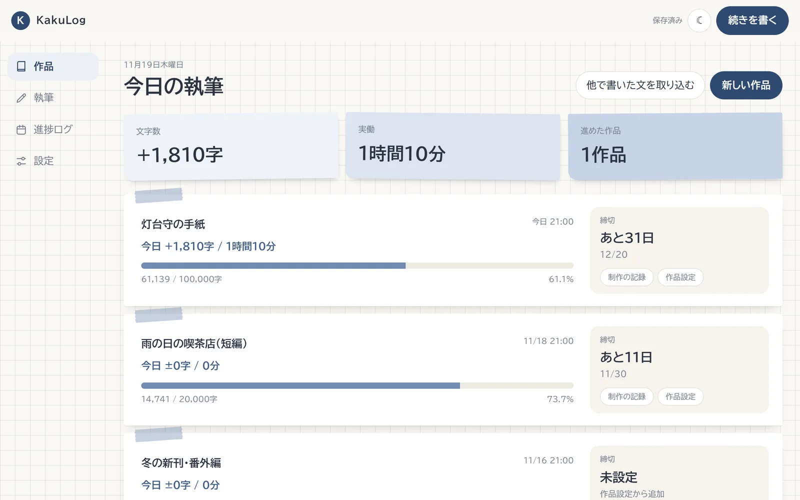
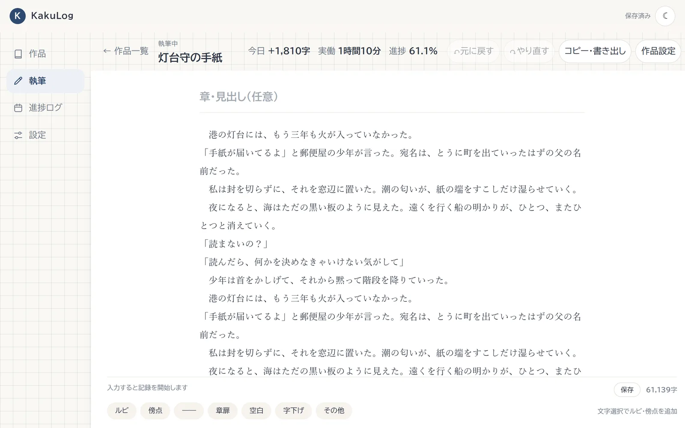
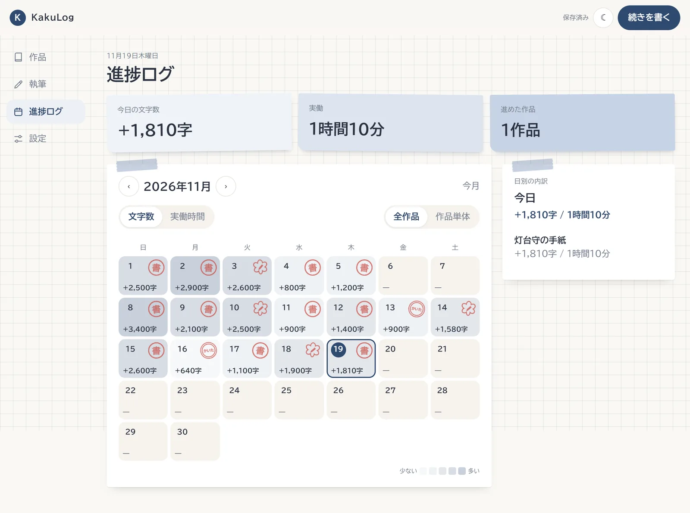
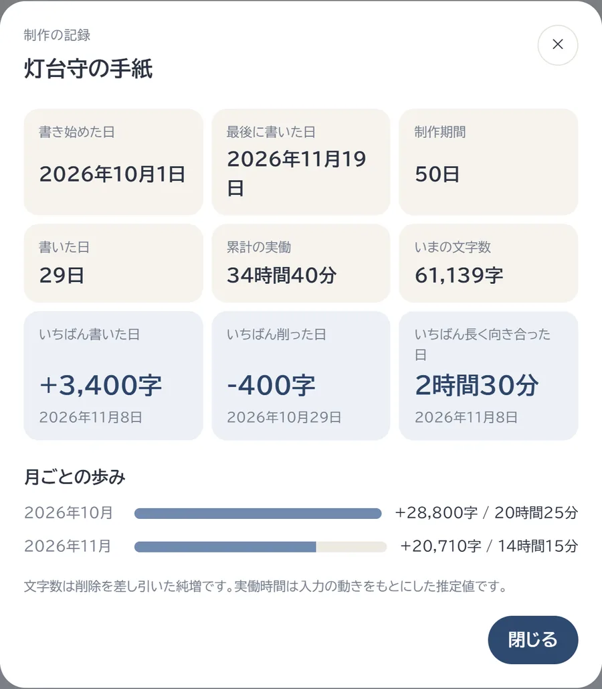

KakuLogカクログ
今日どれくらい書いたんだろう？
何時間書いて、何文字くらい？

けっこう書いた気がする。
……で、何文字？
今日の文字数
+1,810字
夜ずっと机にいたけど、
書いてたのは何時間？
実働
1時間10分
手が止まっていた時間は数えません
締切まであと1か月。
間に合う、よね？
締切まで
あと31日
61,139 / 100,000字 61.1%
3行書いて、2行消した。
これって進んだ？
いちばん削った日
−400字
この日も35分、ちゃんと書いていました
その答え、KakuLog が残しておきます。
数字はサンプルの作品のものです
01
書くだけで、記録が残る
増えた文字数と書いていた時間を自動で記録します。タイマーを押すことも、記録アプリに打ち込むこともありません。
02
書いた日に、はんこがポン
カレンダーに、書いた日のはんこが並んでいきます。並んでいくのがうれしくて、空いた日にも気づけます。
03
締切まで、あとどれくらいか見える
目標の文字数と締切を入れておくと、いま何％まで進んだかが分かります。
FEATURES
文字数のアプリ、時間を計るアプリ、締切のメモ。ばらばらだったものを、書く画面のとなりにまとめました。
タイマーも、記録アプリへの入力もいりません。打ちはじめると記録がはじまり、手が止まっているあいだは時間に数えません。開きっぱなしの時間ではなく、ちゃんと書いていた時間が残ります。

画面はサンプルの作品です
進捗ログのカレンダーには、書いた日ごとにはんこが自動で押されます。たくさん書いた日ほどマスの色が濃くなるので、ひと月の調子がひと目でわかります。

作品ごとに目標文字数と締切を決めると、作品一覧に進捗バーと「あと◯日」が出ます。作品の「制作の記録」では、その作品とどう向き合ってきたかを振り返れます。
消した日も、がんばった日。
推敲で文字数が減った日も、書いていた時間はちゃんと残ります。記録には「いちばん削った日」も出ます。

IMPORT
取り込んだ分はログに数えないので、今日からの記録がまっさらに始まります。
ほかのツールで書いた原稿を貼り付けるか、テキストファイル（TXT）で取り込めます。取り込んだ分は執筆ログに数えないので、ある日だけ数万字書いたことになったりしません。取り込んだあとに書いた分から、記録がはじまります。
TOOLS
小説の原稿で使う記号や記法を、ボタンひとつで入れられます。
ルビ・傍点
文字を選んでボタンを押すだけ。ルビの読みや傍点の記号は文字数に数えません。
ダッシュ「――」
打ちにくい2倍ダッシュもボタンで入れられます。
字下げ
段落の頭に全角スペースをまとめて入れます。かぎかっこで始まる行はそのまま。
章扉・空白ページ
同人誌の原稿づくりで使う区切りも入れられます。
全文コピー・書き出し
記法ありと記法なしを選んで、全文コピーやTXT書き出しができます。投稿サイトへの貼り付けにも。
保存ボタンと自動保存
書いたそばから自動で保存。自分のタイミングで押せる保存ボタンもあります。
次の作品の目安
これまでの記録から、次の作品にかかる期間や、締切まで1日に書く字数の目安を出します。
見た目の調整
メインカラー7色、方眼の表示、本文の文字の大きさ、ナイトモード。
自動バックアップ
1日1つバックアップを作り、14日分を残します。設定から全データの保存もできます。
COMPARE
文字数を数えるアプリは時間を残さず、時間を計るアプリは文字数を知りません。KakuLog は両方を、書くだけで残します。
| KakuLog | 文字数記録アプリ | 時間計測アプリ | ふつうのエディタ | |
|---|---|---|---|---|
| 毎日の文字数が自動で残る | ○ | ○ | × | × |
| 書いていた時間が自動で残る | ○ | × | △ 手で開始・停止 | × |
| カレンダーで書いた日が見える | ○ はんこつき | △ | △ 時間だけ | × |
| 作品ごとの目標・締切・進捗％ | ○ | △ | × | × |
| 取り込んだ文は記録に数えない | ○ | × | — | — |
2026年11月時点で、作者が調べた範囲の一般的な傾向です。アプリによって異なります。
WINDOWS
KakuLog の Windows版は、インターネットにつながずに動きます。アカウントの登録もいりません。原稿も執筆ログも、このPCの中にだけ保存されます。
FAQ
販売しているのは Windows版だけです。スマホやMacには対応していません。
ありません。Windows版はインターネットにつながずに動き、原稿と執筆ログはこのPCの中にだけ保存されます。
「他で書いた文を取り込む」から、貼り付けかTXTファイルで取り込めます。取り込んだ分は執筆ログに数えません。
1日1つ自動でバックアップを作り、14日分を残します。設定画面の「全データを保存」から、好きなときにファイルとして保存することもできます。
いまは横書きだけです。
キーボードで入力している動きをもとに数えています。手が止まったまましばらくたつと、その時間は数えません。目安としてご覧ください。
複数の端末で原稿を同期できる月額版を準備しています。この買い切り版は、月額版が出たあともそのまま使えて、アップデートも無料のままです。
KakuLog Windows版は BOOTH で販売します（準備中）。
早期購入価格 1,980円・アップデート無料。